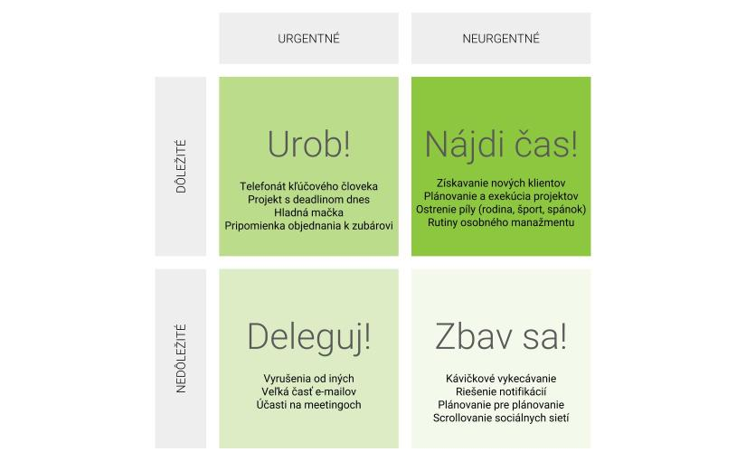

Eisenhowerova matica
V živote nás čaká veľa povinnosti, ktoré musíme skôr či neskôr splniť. Tieto aktivity môžu byť spojené so školou, prácou, túžbou po úspechu alebo túžbou mať všetko načas naplánované, zorganizované alebo splnené. Time management je niečo, o čom sa hovorí len zriedka v spoločnosti a preto nepoznáme správne techniky a metódy správneho Time managementu. Jednou z techník je Eissenhowerova matica, ktorá Vám pomôže s ľahkosťou a rýchlosťou určiť, ktoré aktivity by ste mali začať robiť ako prvé. Táto technika je užitočná hlavne v momente, ak máte veľa povinností a sami neviete, s ktorou začať, pretože máte pocit, že každá z nich je pre Vás dôležitá.
Eisenhowerova matica sa skladá zo štyroch kvadrantov, kde každý jeden z nich značí prioritu, ktorú máme venovať danej aktivite. Pomyselné osi nám pomáhajú k určeniu správnej priority. Osi značia: Urgentnosť/Neurgentnosť, Dôležitosť/Nedôležitosť. Na základe danej aktivity môžeme teda určiť, či je aktivita urgentná/neurgentná a dôležitá/nedôležitá. Po zodpovedaní týchto otázok sme schopní učiť správnu prioritu danej aktivity a umiestniť ju do jedného z kvadrantov.

Čo je dôležité a čo urgentné?
Urgentnosť: hovorí o tom, čo horí, a čo nie. Ak je úloha časovo senzitívna (mám externý deadline na dane, deadline na IFJ projekt je za týždeň a môj tím ešte nezačal pracovať), zdroje na jej vykonanie sú obmedzené časom (kolega mi odchádza zajtra na dovolenku), je kritická pre začatie inej úlohy, patrí medzi urgentné.
Dôležitosť: miera toho, ako výrazne ma dokáže daný krok, aktivita, projekt, ovplyvniť alebo posunúť k naplneniu mojich cieľov, nakoľko prispieva k môjmu želanému stavu. Príkladom pre študenta môže byť projekt, bez ktorého nezíska zápočet a predmet bude musieť opakovať.
Čo v prípade, že sme pre našu aktivitu našli správny kvadrant v matici?
Mali by ste postupovať nasledovne:
1. Urgentné – dôležité: Urob hneď!
2. Neurgetné – dôležité: Naplánuj si!
3. Urgentné – nedôležité: Deleguj!
4. Neurgetné – nedôležité: Nerob, odstráň!
Veríme že Vám Eisenhowerova matica pomôže s Vašim Time managementom a že našu aplikáciu využijete naplno.
Tím BrainFree.
 Guide
Guide Log out
Log out